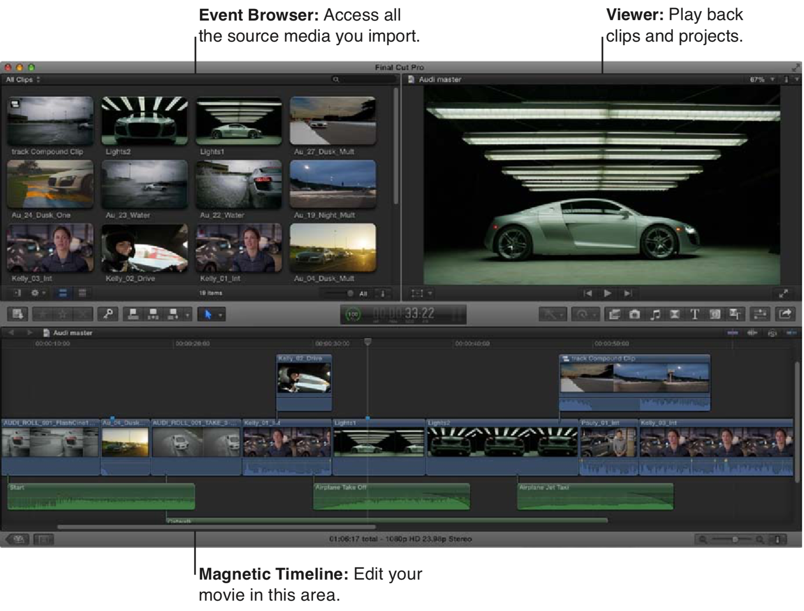

学习视频: 这里
1 基本知识
1.1 区域

- 资源库 Library (一级)
- 事件 Event (二级)
- 项目 Project (三级) 也可以理解为是一个时间线
1.2 导入素材
使用 ⌘i 或者 使用 Finder 直接拖入素材库
1.3 裁剪
I Initialize O Over
一个小技巧: 如果想要音频很容易对上，可以考虑有一个锚点，改点为一个特殊的点，如一个特殊的画面，或者一个特殊的波峰
1.4 导出
分享, 选择电脑，默认为 MP4
1.5 B站的特殊压制
需要下载 Compressor 软件
见 这里
1.6 TODO
添加片头，字幕 和 转场
2 快捷键
| 快捷键 | 释义 |
|---|---|
| ⌘i | 导入素材 |
| i | 开始剪辑 |
| o | 结束剪辑 |
| b | blade 切换到切割模式 |
| a | 切换到选择模式 |
| ⌘+/- | 缩放 |
| shift z | 查看所有时间线的内容 |